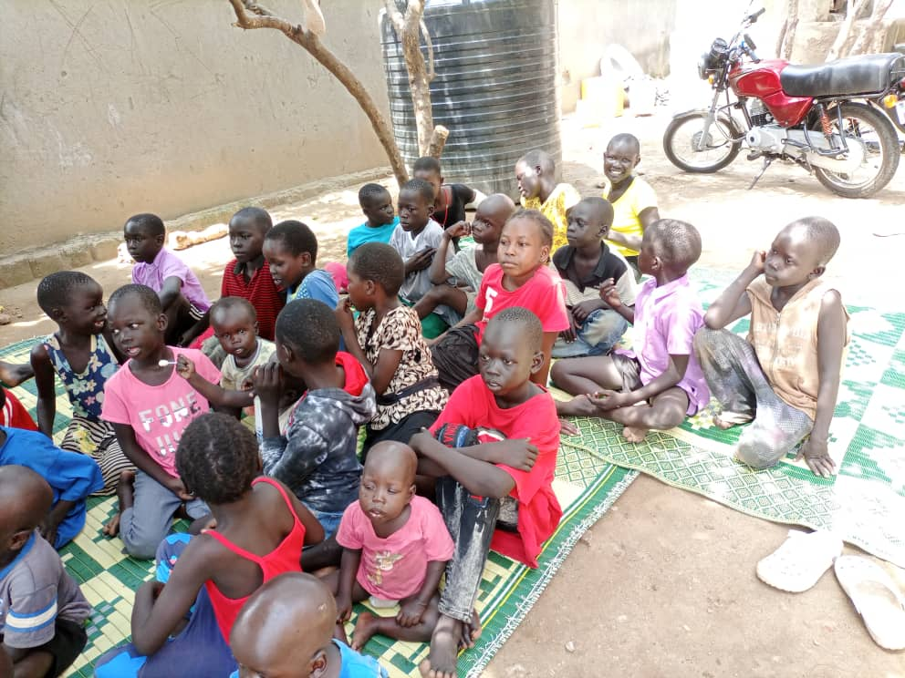
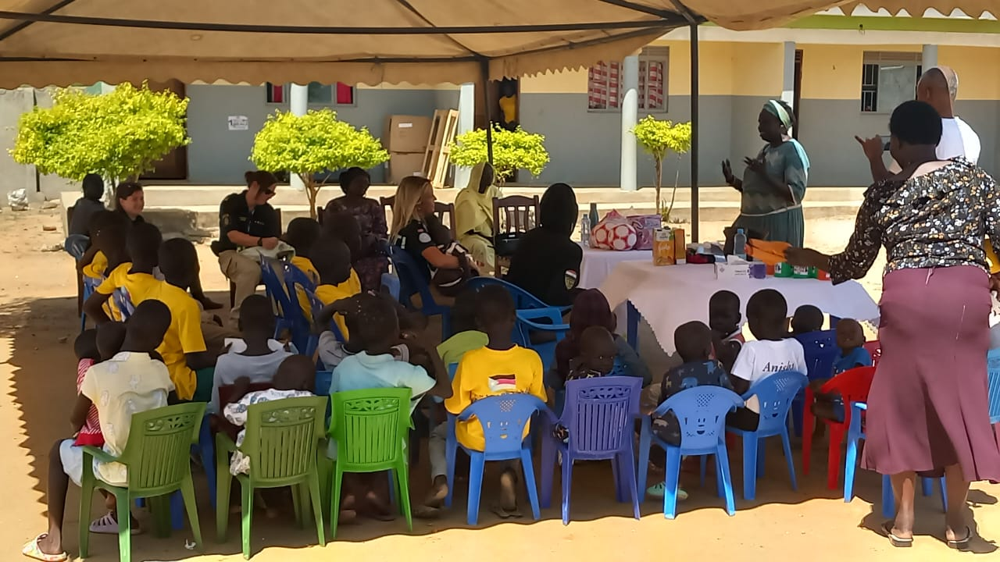
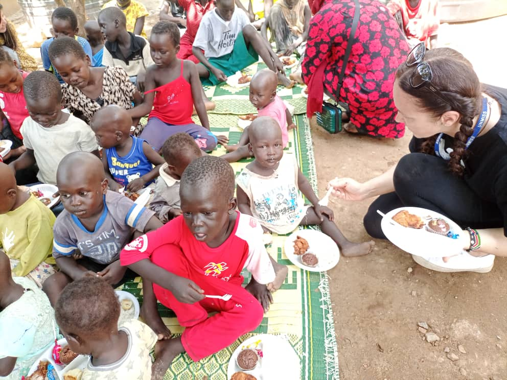
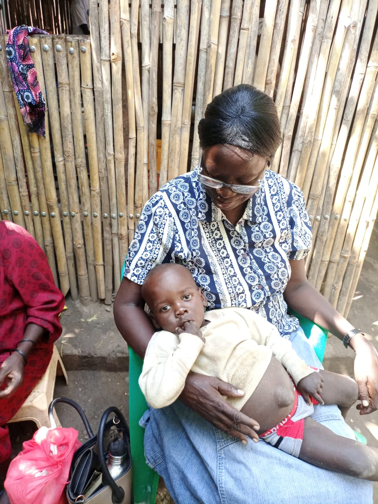
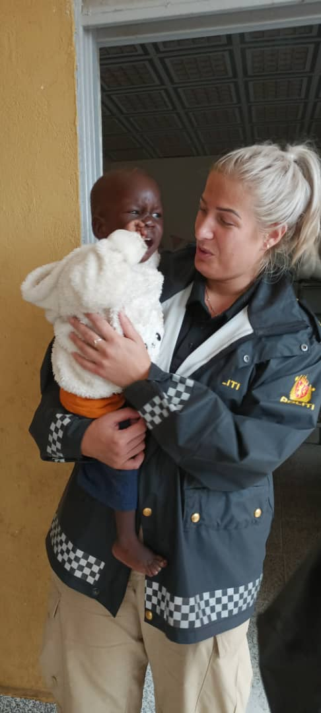
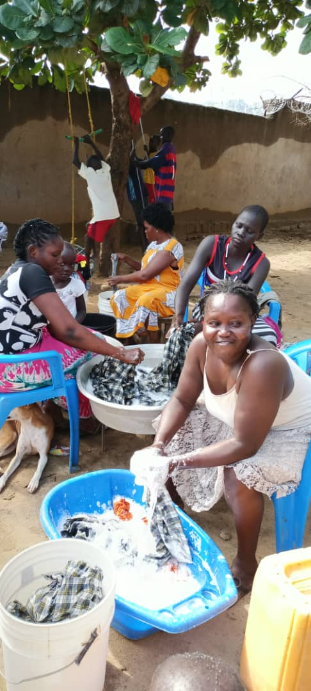

"There is no higher religion than human service. To work for the common good is the greatest creed."
Home is not defined by walls alone, but by the love, safety and sense of belonging shared within them. Since 2012, Juba Rescue Centre has worked tirelessly to create that kind of home for vulnerable children, building a close-knit family despite the many challenges it has faced. The children are proud of the community they have built together and grateful for the care they receive every day. What remains is the opportunity to strengthen the physical spaces around them so that the home they have created in their hearts is reflected in the environment they live in. Explore each tile below by clicking onto them to learn more.
While many needs remain unmet, love has never been one of them. From Mama Betty and the dedicated matrons to the staff and the children themselves, Juba Rescue Centre has grown into a family built on compassion, resilience and genuine care. Every shared meal, comforting embrace, burst of laughter and moment of encouragement reminds each child that they are valued and never alone.
It is the people within these walls who create a home. Their kindness, friendships and unwavering support light a warmth that cannot be measured by buildings or possessions. Together, they have built a community where every child is welcomed with dignity, hope and the promise of belonging.

Juba Rescue Centre provides rescued children with a safe place to stay despite not having a permanent home. The centre accommodates children using shared rooms, donated beds, mattresses and bedding while working towards more permanent housing.
As the number of children continues to increase, expanding accommodation remains one of the centre's greatest needs to ensure every child has a safe and comfortable place to call home.

Nutritious meals are provided through generous donations from supporters, partners and well-wishers. The availability of food often depends on the donations received.
Infant nutrition remains especially challenging due to the high cost of baby formula and other specialised foods required by young children.

Most medical care offered at the centre is limited due to financial constraints. Although every effort is made to ensure children receive treatment whenever necessary, access to professional healthcare is not always guaranteed.
The centre previously relied on a post-paid agreement with Al Sabar Hospital. However, the allocated funds were often exhausted before the agreed period ended, while children with more complicated conditions required referrals to larger hospitals.
Babies require routine vaccinations, regular medical check-ups, infant formula and diapers. Government vaccination campaigns occasionally provide free immunisation services, but they are not frequent enough to meet the children's ongoing healthcare needs.
Many children arrive having experienced trauma, abuse or neglect. UNICEF has supported the centre by providing counsellors, but there remains a need for permanent counsellors, nurses and continued mental health support for children, adolescents and young mothers.

Clothing at the centre is made possible largely through the generosity of donors who provide clothes, shoes, blankets and other everyday essentials. These contributions help ensure that every child has access to clean, comfortable clothing while easing the financial burden on the home.
When donations are not enough, the centre purchases affordable second-hand clothing in bales. Items that are too large, too small or unsuitable for the children are carefully sold, with every shilling reinvested into meeting the centre's needs. This simple practice not only reduces waste but also creates a small, sustainable source of income that helps support the children.

Access to clean water and reliable electricity remains one of the centre's greatest daily challenges. Safe water must be purchased regularly for drinking, cooking, bathing and washing, making it one of the home's most significant recurring expenses. As the number of children continues to grow, so does the cost of providing these basic necessities.
Electricity is equally essential but remains limited. At present, only a few scattered light bulbs provide illumination around the home, leaving many areas without adequate lighting. Spaces such as the baby cots require a stable source of electricity to create a safe, comfortable and nurturing environment where infants can grow and develop. The centre hopes to install solar panels to provide clean, dependable energy that will improve living conditions, enhance safety and reduce long-term electricity costs.
Looking ahead, the centre also dreams of investing in sustainable water solutions through the installation of large rainwater harvesting tanks or the construction of a borehole. Together with solar energy, these improvements would strengthen the home's independence, reduce operating costs and ensure that every child has access to the basic resources needed to thrive.

Love gives children hope, but safe shelter, food, clean water and healthcare give them the chance to thrive. Help us provide the essentials every child deserves.
Give the Gift Of Home